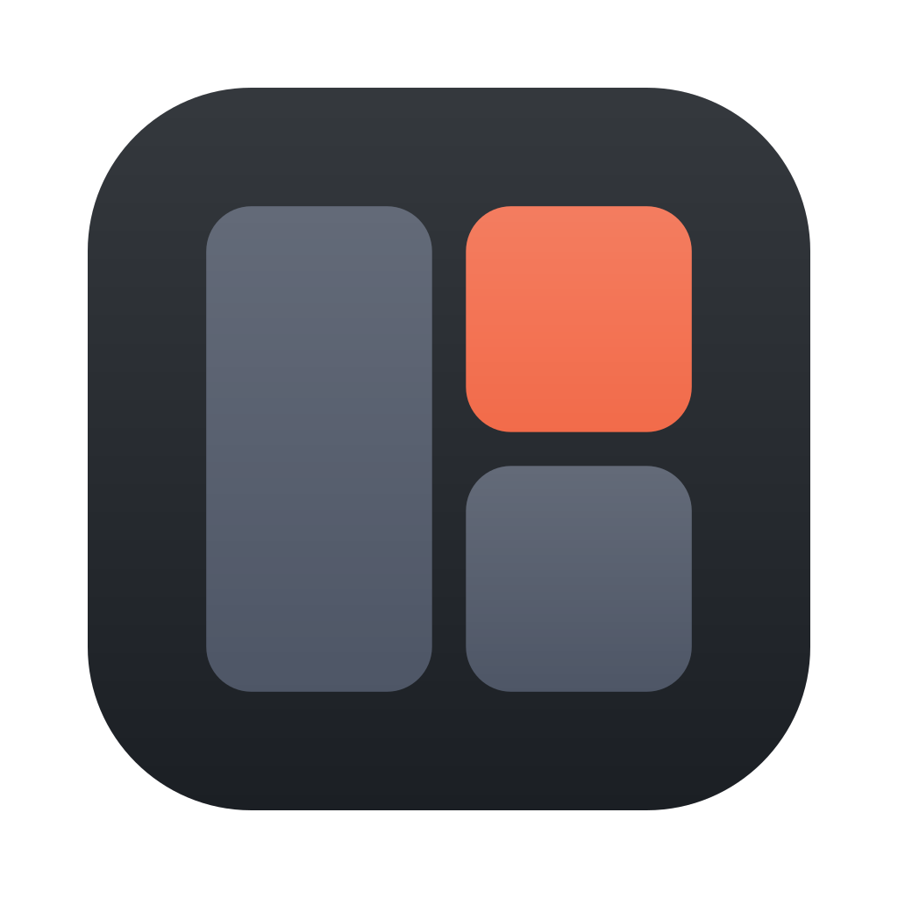

Armadale
A native macOS terminal for running and supervising persistent agent sessions.
Download for MacmacOS 27 or later, Apple silicon. All releases

A native macOS terminal for running and supervising persistent agent sessions.
Download for MacmacOS 27 or later, Apple silicon. All releases